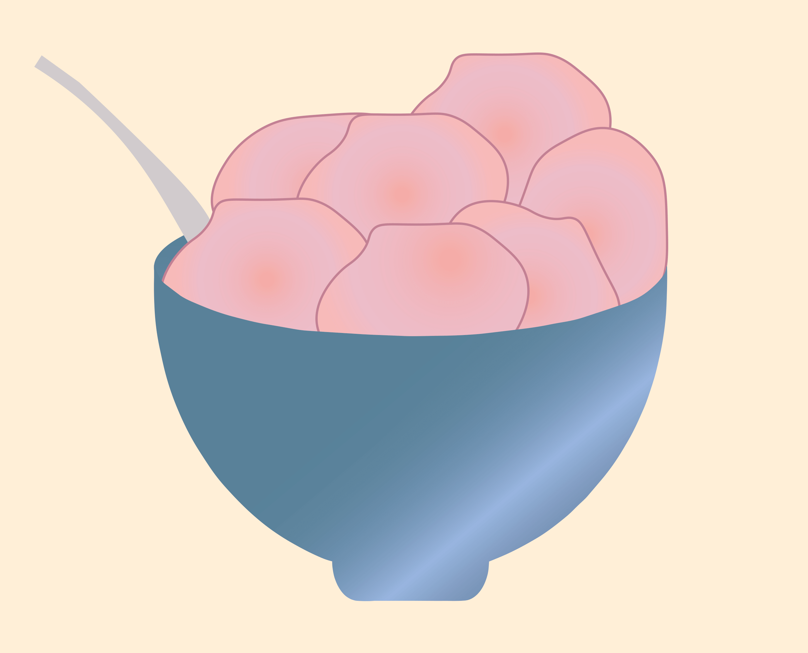

Ingredienser
3 dl frosne jordbær
3 spsk akaciehoning
6 dl Thise yoghurt med pære
Fremgangsmåde:
Blend alle ingredienserne sammen i en blender og kom blandingen i fryseren. Efter en nat i fryseren er isen klar til servering. Serveres med frisk frugt og knuste småkager.